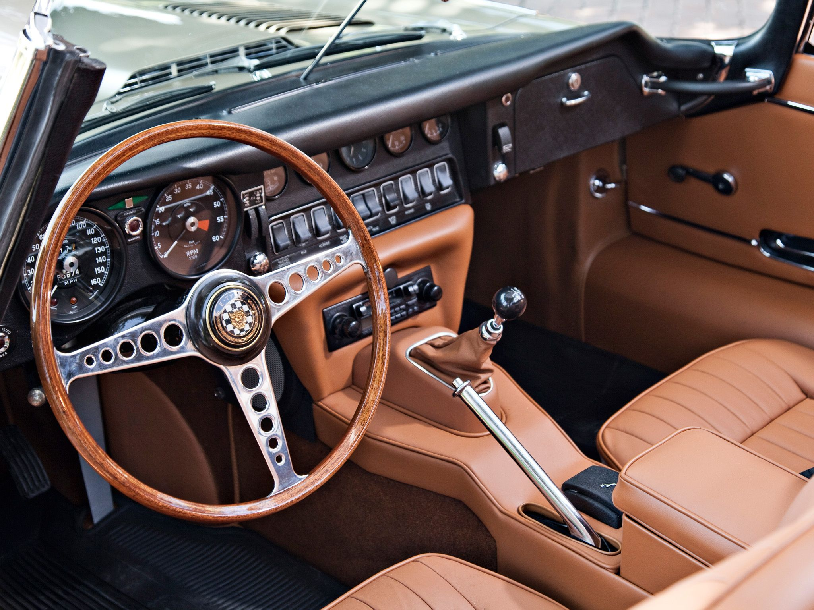
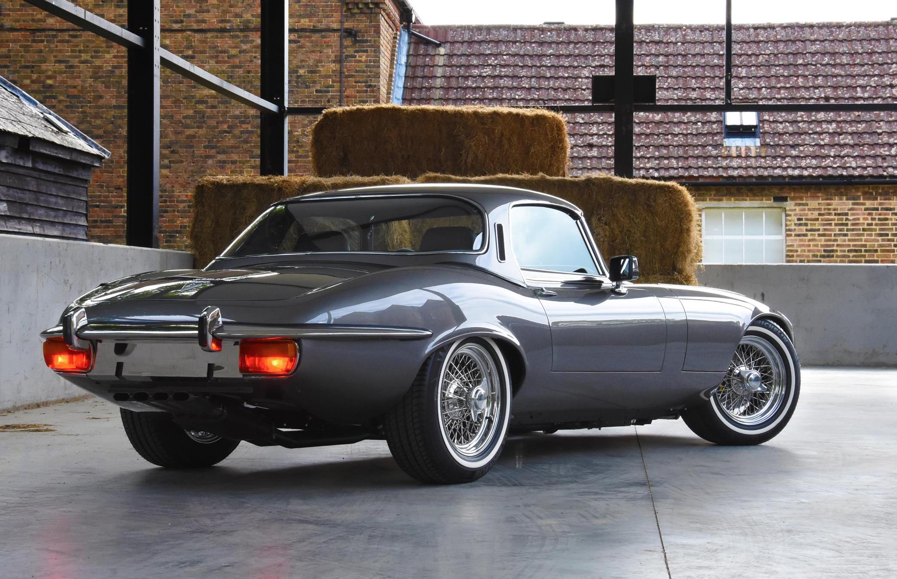

Amikor Enzo Ferrari a Jaguar E-Type-ot "a világ legszebb autójának" nevezte, nem túlzott. Az 1961-es Genfi Autószalonon bemutatott E-Type azonnal elrabolta a közönség szívét futurisztikus formájával, lenyűgöző teljesítményével és viszonylag megfizethető árával. Ez az autó nem csupán egy közlekedési eszköz volt, hanem egy műalkotás, a stílus és a sebesség szimbóluma, amely a hatvanas évek brit autózásának aranykorát fémjelezte.
A Design, Ami Megigézett
Az E-Type formavilága Malcolm Sayer, a Jaguar aerodinamikai szakértőjének és tervezőjének zsenialitását dicséri. A hosszú orr, a kecses vonalak és a kupé változat buborékszerű tetővonala aerodinamikai és esztétikai szempontból is tökéletes harmóniát alkotott. Az autó formája a repülőgépek ihlette, és az akkori versenysportban szerzett tapasztalatok is visszaköszöntek benne.
A Jaguar E-Type elegáns és sportos belső tere
Három fő széria készült az E-Type-ból: az S1, S2 és S3. Az S1 modellek (1961-1968) a legkeresettebbek, jellegzetes fényszóróburkolatukkal és egyszerűbb belső terükkel. Az S2 (1968-1971) kisebb külső változtatásokkal és jobb hűtéssel érkezett, míg az S3 (1971-1974) kapott egy V12-es motort és szélesebb keréktávot.
Teljesítmény és Innováció
Az E-Type nemcsak a szépségéről, hanem a teljesítményéről is híres volt. Kezdetben egy 3,8 literes, soros hathengeres XK motor hajtotta, amely 265 lóerőt produkált, és akár 240 km/h-s (150 mph) végsebességet is lehetővé tett, ami az akkori viszonyok között kivételes volt. Később egy 4,2 literes változat, majd az S3-ban egy 5,3 literes V12-es motor is bekerült.
Az E-Type jellegzetes hátsó része
Az autó független felfüggesztéssel, tárcsafékekkel és precíz kormányzással rendelkezett, ami a korában rendkívül modernnek számított, és kiváló vezetési élményt nyújtott. Ezek a technológiai újítások hozzájárultak ahhoz, hogy az E-Type ne csak látványos, hanem a vezetés szempontjából is kiemelkedő autó legyen.
Örökség és Gyűjtői Érték
A Jaguar E-Type mára az oldtimer piac egyik legkeresettebb modellje lett. Azok a ritka és jól karbantartott példányok, különösen az S1-es sorozatból, hatalmas összegekért cserélnek gazdát az aukciókon. De az értékénél is fontosabb a kulturális jelentősége: az E-Type a hatvanas évek stílusának és a brit autózás aranykorának ikonja, egy olyan gép, amely generációk képzeletét ragadta meg.
A mai napig a Jaguar E-Type az egyik legelismertebb klasszikus sportautó, amely nemcsak a formatervezés, hanem a mérnöki tudomány szempontjából is megállta a helyét az idő próbáján. Valóban egy időtlen darab, amely méltán foglalja el helyét az autótörténelem legnagyobbjai között.
Alapvető adatok
| Jellemző | Adat |
|---|---|
| Gyártási évek | 1961 – 1974 (különböző szériákban) |
| Gyártó | Jaguar Cars |
| Kategória | Sportautó, Grand Tourer |
| Motor (S1. 3.8L) | 3.8 L (230 cu in) XK I6 (soros hathengeres) |
| Motor (S1. 4.2L) | 4.2 L (258 cu in) XK I6 (soros hathengeres) |
| Teljesítmény (3.8L) | 265 LE (198 kW) |
| Teljesítmény (4.2L) | 265 LE (198 kW) (nyomatékban erősebb) |
| Végsebesség | ~240 km/h (150 mph) |
| Gyorsulás (0-100 km/h) | ~7 másodperc (3.8L) |
| Karosszéria változatok | FHC (Fixed Head Coupé), Roadster (OTS - Open Two Seater), 2+2 Kupé |
| Hosszúság | ~4453 mm (175.3 in) |
| Szélesség | ~1638 mm (64.5 in) |
| Magasság | ~1222 mm (48.1 in) |
| Súly | ~1270-1320 kg (2800-2900 lbs) |
| Jellegzetességek | Hosszú, áramvonalas karosszéria, ikonikus orr, független felfüggesztés |